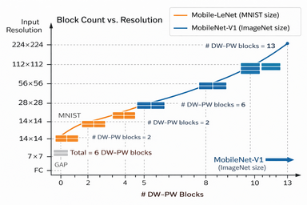

Mobile-LeNet

Design Choices
Mobile-LeNet is a compact convolutional neural network inspired by both LeNet-5 and MobileNet-V1. Its purpose is didactic rather than competitive: to expose, in a single small model, the full set of modern CNN building blocks commonly used in edge and embedded deep learning. Specifically, this model demonstrates:
- Standard convolution
- Depth-wise convolution
- Point-wise (1×1) convolution
- Batch Normalization
- Non-linear activation (ReLU)
- Spatial downsampling via stride
- Global Average Pooling (GAP)
- Dense classification (or fully connected network / FCN)
The target dataset is MNIST (28×28 grayscale)

Architectural Overview
| # | Layer (Type) | Output Shape | Params | Weight / Bias file |
|---|---|---|---|---|
| 1 | stem_conv3x3 (Conv2D) |
28×28×8 | 80 | w01.txt, b01.txt |
| 2 | stem_bn (BatchNorm) |
28×28×8 | 32 | bn01.txt |
| 3 | stem_relu (ReLU) |
28×28×8 | 0 | — |
| 4 | B1_dw3x3_s1 (DepthwiseConv2D) |
28×28×8 | 72 | w02.txt |
| 5 | B1_dw_bn (BatchNorm) |
28×28×8 | 32 | bn02.txt |
| 6 | B1_dw_relu (ReLU) |
28×28×8 | 0 | — |
| 7 | B1_pw1x1 (Conv2D) |
28×28×8 | 64 | w03.txt |
| 8 | B1_pw_bn (BatchNorm) |
28×28×8 | 32 | bn03.txt |
| 9 | B1_pw_relu (ReLU) |
28×28×8 | 0 | — |
| 10 | B2_dw3x3_s1 (DepthwiseConv2D) |
28×28×8 | 72 | w04.txt |
| 11 | B2_dw_bn (BatchNorm) |
28×28×8 | 32 | bn04.txt |
| 12 | B2_dw_relu (ReLU) |
28×28×8 | 0 | — |
| 13 | B2_pw1x1 (Conv2D) |
28×28×8 | 64 | w05.txt |
| 14 | B2_pw_bn (BatchNorm) |
28×28×8 | 32 | bn05.txt |
| 15 | B2_pw_relu (ReLU) |
28×28×8 | 0 | — |
| 16 | B3_pad1 (ZeroPadding2D) |
30×30×8 | 0 | — |
| 17 | B3_dw3x3_s2 (DepthwiseConv2D) |
14×14×8 | 72 | w06.txt |
| 18 | B3_dw_bn (BatchNorm) |
14×14×8 | 32 | bn06.txt |
| 19 | B3_dw_relu (ReLU) |
14×14×8 | 0 | — |
| 20 | B3_pw1x1 (Conv2D) |
14×14×16 | 128 | w07.txt |
| 21 | B3_pw_bn (BatchNorm) |
14×14×16 | 64 | bn07.txt |
| 22 | B3_pw_relu (ReLU) |
14×14×16 | 0 | — |
| 23 | B4_dw3x3_s1 (DepthwiseConv2D) |
14×14×16 | 144 | w08.txt |
| 24 | B4_dw_bn (BatchNorm) |
14×14×16 | 64 | bn08.txt |
| 25 | B4_dw_relu (ReLU) |
14×14×16 | 0 | — |
| 26 | B4_pw1x1 (Conv2D) |
14×14×16 | 256 | w09.txt |
| 27 | B4_pw_bn (BatchNorm) |
14×14×16 | 64 | bn09.txt |
| 28 | B4_pw_relu (ReLU) |
14×14×16 | 0 | — |
| 29 | B5_pad1 (ZeroPadding2D) |
16×16×16 | 0 | — |
| 30 | B5_dw3x3_s2 (DepthwiseConv2D) |
7×7×16 | 144 | w10.txt |
| 31 | B5_dw_bn (BatchNorm) |
7×7×16 | 64 | bn10.txt |
| 32 | B5_dw_relu (ReLU) |
7×7×16 | 0 | — |
| 33 | B5_pw1x1 (Conv2D) |
7×7×24 | 384 | w11.txt |
| 34 | B5_pw_bn (BatchNorm) |
7×7×24 | 96 | bn11.txt |
| 35 | B5_pw_relu (ReLU) |
7×7×24 | 0 | — |
| 36 | B6_dw3x3_s1 (DepthwiseConv2D) |
7×7×24 | 216 | w12.txt |
| 37 | B6_dw_bn (BatchNorm) |
7×7×24 | 96 | bn12.txt |
| 38 | B6_dw_relu (ReLU) |
7×7×24 | 0 | — |
| 39 | B6_pw1x1 (Conv2D) |
7×7×24 | 576 | w13.txt |
| 40 | B6_pw_bn (BatchNorm) |
7×7×24 | 96 | bn13.txt |
| 41 | B6_pw_relu (ReLU) |
7×7×24 | 0 | — |
| 42 | GAP (GlobalAveragePooling2D) |
24 | 0 | — |
| 43 | OUT (Dense) |
10 | 250 | w14.txt, b02.txt |
| Total parameters: 3,258 Trainable parameters: 2,890 Non-trainable parameters: 368 |
The network above follows a progressive feature extraction strategy:
- Early layers preserve spatial resolution and learn low-level features (edges, strokes).
- Intermediate layers downsample while increasing channel capacity.
- Late layers aggregate global structure before classification.
Downsampling is performed using stride-2 depth-wise convolution, replacing the pooling layers used in classic LeNet.
Stem Convolution
The stem consists of a single standard convolution:
- K = 3×3, S = 1, P = 1
- Expands the channel dimension from 1 → 8
- Preserves spatial resolution (28×28)
This layer converts raw pixel intensity into a small set of learned feature maps. Batch Normalization and ReLU immediately follow to stabilize optimization and introduce nonlinearity.
Depth-wise Separable Blocks (DW → PW)
Each block consists of two stages:
1. Depth-wise Convolution (DWConv)
- Operates independently on each channel
- Learns spatial filters without mixing channels
- Computational cost scales with spatial size only
2. Point-wise Convolution (PWConv, 1×1)
- Mixes information across channels
- Controls the number of output feature maps
- Restores representational power lost by depth-wise separation
This separation dramatically reduces multiply-accumulate operations (MACs) compared to standard convolutions, making the architecture suitable for embedded inference.
Stage-wise Organization
Stage 1 — Feature Refinement (28×28)
Blocks B1–B2 operate at full spatial resolution:
- Stride S = 1
- No downsampling
- Focus on stabilizing and refining low-level features
This mirrors early layers in LeNet, where preserving detail is critical for thin digit strokes.
Stage 2 — First Downsampling (14×14)
Block B3 introduces downsampling:
- Depth-wise convolution with S = 2
- Explicit padding + VALID convolution
- Channel expansion: 8 → 16
Block B4 then refines features at the new scale. Downsampling is delayed until sufficient local structure has been extracted, reducing information loss.
Stage 3 — Second Downsampling (7×7)
Block B5 performs a second downsampling:
- Depth-wise convolution with S = 2
- Channel expansion: 16 → 24
Block B6 refines global digit structure before classification. At this stage, each feature map responds to large regions of the input image.
Padding Strategy
Padding is explicitly controlled and expressed in terms of (K, S, P) rather than abstract "same" semantics.
- For S = 1, symmetric padding with
P = 1preserves spatial size. - For S = 2, padding is applied explicitly before a VALID convolution to control output dimensions deterministically.
Global Average Pooling
Instead of a fully connected spatial flattening:
- Global Average Pooling (GAP) collapses each 7×7 feature map into a single scalar
- Output dimension becomes 24
Advantages:
- Reduces parameter count
- Improves translation robustness
- Avoids large dense layers (important for MCUs)
Classification Layer
A final dense layer maps: - 24 → 10 outputs - Followed by softmax for digit classification
This mirrors the role of the final fully connected layers in LeNet-5, but with far fewer parameters.
Noodle Implementation
One set of MobileNet consists of:
- Depth-wise convolution (DW)
- Batch normalization (BN)
- ReLU
- Point-wise convolution (PW)
- Batch normalization (BN)
- ReLU
Therefore, we create a helper function noodle_dw_pw_block(...) that runs this sequence once: DW → BN → ReLU → PW → BN → ReLU.
uint16_t noodle_dw_pw_block(float *in, float *out,
uint16_t W_in,
uint16_t Cin,
uint16_t Cout,
uint16_t stride_dw,
const float *w_dw, const float *bn_dw,
const float *w_pw, const float *bn_pw)
{
const float BN_EPS = 1e-3f; // match Keras default
Pool none{}; // M=1,T=1 by default
// DW (Cin -> Cin)
ConvMem dw{};
dw.K = 3; dw.P = 1; dw.S = stride_dw;
dw.weight = w_dw;
dw.bias = nullptr;
dw.act = ACT_NONE;
uint16_t W = noodle_dwconv_float(in, Cin, out, W_in, dw, none, nullptr);
noodle_bn_relu(out, Cin, W, bn_dw, BN_EPS);
// PW (Cin -> Cout)
ConvMem pw{};
pw.K = 1; pw.P = 0; pw.S = 1;
pw.weight = w_pw;
pw.bias = nullptr;
pw.act = ACT_NONE;
W = noodle_conv_float(out, Cin, Cout, in, W, pw, none, nullptr);
noodle_bn_relu(in, Cout, W, bn_pw, BN_EPS);
return W;
}
void predict()
{
⋮
⋮
// ---- Input ----
// FEAT_A holds input image in CHW where C=1, W=28: [1][28][28]
// ---- No Pooling ----
Pool none{}; none.M = 1; none.T = 1;
// ---- Stem: Conv3x3 (1->8) + BN + ReLU ----
ConvMem stem{};
stem.K = 3; stem.P = 1; stem.S = 1;
stem.weight = w01;
stem.bias = b01;
stem.act = ACT_NONE;
// ---- Dense: 24 -> 10 ----
FCNMem head{};
head.weight = w14; // row-major [10,24]
head.bias = b02; // 10
head.act = ACT_NONE;
uint16_t W = noodle_conv_float(FEAT_A, 1, 8, FEAT_B, 28, stem, none, nullptr);
noodle_bn_relu(FEAT_B, 8, W, bn01, 1e-3f);
// Ping-pong buffers
float *in = FEAT_B;
float *out = FEAT_A;
// ---- B1 (8->8, stride 1) ----
W = noodle_dw_pw_block(in, out, W, 8, 8, 1, w02, bn02, w03, bn03);
// ---- B2 (8->8, stride 1) ----
W = noodle_dw_pw_block(in, out, W, 8, 8, 1, w04, bn04, w05, bn05);
// ---- B3 (8->16, stride 2) ----
W = noodle_dw_pw_block(in, out, W, 8, 16, 2, w06, bn06, w07, bn07);
// ---- B4 (16->16, stride 1) ----
W = noodle_dw_pw_block(in, out, W, 16, 16, 1, w08, bn08, w09, bn09);
// ---- B5 (16->24, stride 2) ----
W = noodle_dw_pw_block(in, out, W, 16, 24, 2, w10, bn10, w11, bn11);
// ---- B6 (24->24, stride 1) ----
W = noodle_dw_pw_block(in, out, W, 24, 24, 1, w12, bn12, w13, bn13);
// ---- GAP: (W x W x 24) -> (24,) in-place ----
W = noodle_gap(in, 24, W);
// ---- Dense: (24,) -> (10,) ----
W = noodle_fcn(in, W, 10, out, head, nullptr);
// Softmax in-place on logits
noodle_soft_max(out, 10);
⋮
⋮
}